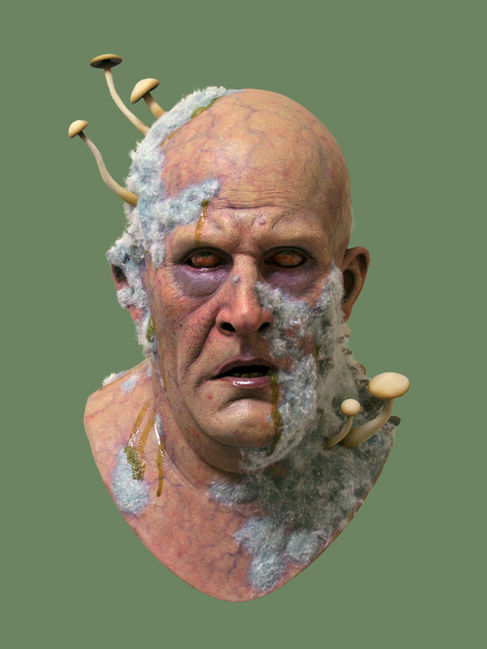

Wat onze klanten zeggen
Hier kan je eigen reviews staan als je je review via de Posts doorgeeft.
âï¸âï¸âï¸âï¸â˜† - Carrot Ginger Tea Sandwich:
"As a proffesional ginger the taste of this sandwhich brought a tear to my eye. Such a beutiful sandwhich that is perfect for all gingers and the ingredients in this sandwhich make it the perfect Bri'ish sandwhich. I am giving this only 4 stars because I don't trust the Turkish. But apart for this this is one of the best sandwiches, innit bruv?"
- Ed Sheeran
âï¸âï¸âï¸âï¸âï¸ - Fresh out of the oven:
"Lekker sappig, knollig en een nasmaak van bloed. 10/10 zal raden aan Canibalisten."

- Een Canibaal
âï¸âï¸âï¸âï¸â˜† - Extra Kaas Sandwich:
"Deze sandwiches... té veel buitenland, te weinig Nederland. Maar die met extra kaas? Die is prima. 🇳🇱🧀"
- Geert Wilders
âï¸âï¸âï¸âï¸âï¸ - Gezonde longen Sandwich:
"Mijn longen voelde nog nooit zo stomig!"
- Pieter Rooks
âï¸âï¸âï¸âï¸âï¸ - Bananenketchup Pasta Cracker Rijst & Bonen Sandwich:
"Dit was de meest goddelijke sandwich die ik ooit heb gehad. De combinatie van de smaak factoren zorgden voor een smeuïge maar ook zachte textuur. Ik ben heel erg onder de indruk dat er zo een lekkere maar, ook gezonde sandwich mogelijk is om te maken. Ik zou het 100 sterren willen geven maar er zijn er maar 5!"
- Jelte Ongelijk
âï¸âï¸âï¸âï¸âï¸ - Bananenketchup Pasta Cracker Rijst & Bonen Sandwich:
"Dit was de meest goddelijke sandwich die ik ooit heb gehad. De combinatie van de smaak factoren zorgden voor een smeuïge maar ook zachte textuur. Ik ben heel erg onder de indruk dat er zo een lekkere maar, ook gezonde sandwich mogelijk is om te maken. Ik zou het 100 sterren willen geven maar er zijn er maar 5!"
- Jelte Ongelijk
âï¸âï¸âï¸âï¸âï¸ - Flying Sandwich:
"Het was een lekkere sandwich. Mijn duif vloog weg dat vond ik erg jammer, de smaken vulde mijn mond alsof er een feestje was, zo veel smaken. prachtig. de veren kwamen vaak in mijn keel en gaven een lekker gevoel. ik vind deze sandwich echt een aanrader."
- Lemra Netsrak
âï¸âï¸âï¸â˜†â˜† - Werkeloosheid Sandwich:
"heerlijke sandwich het was het eerste dat ik in een week had gegeten aleen de prijs was abnormaal hoog"
- De zwerver naast beekdal
âï¸âï¸âï¸âï¸âï¸ - Gayernator Sandwich:
"Ik was mijn hele leven al straight, maar ik wou weten hoe het was om gay te zijn, deze sandwich heeft een hele nieuwe wereld voor mij geopend"
- Xavier
âï¸â˜†â˜†â˜†â˜† - Moldy Sandwich:
"Het was niet levendig genoeg"
- Fungi Champignon